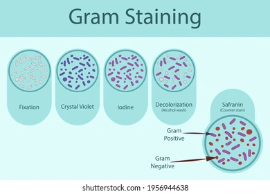
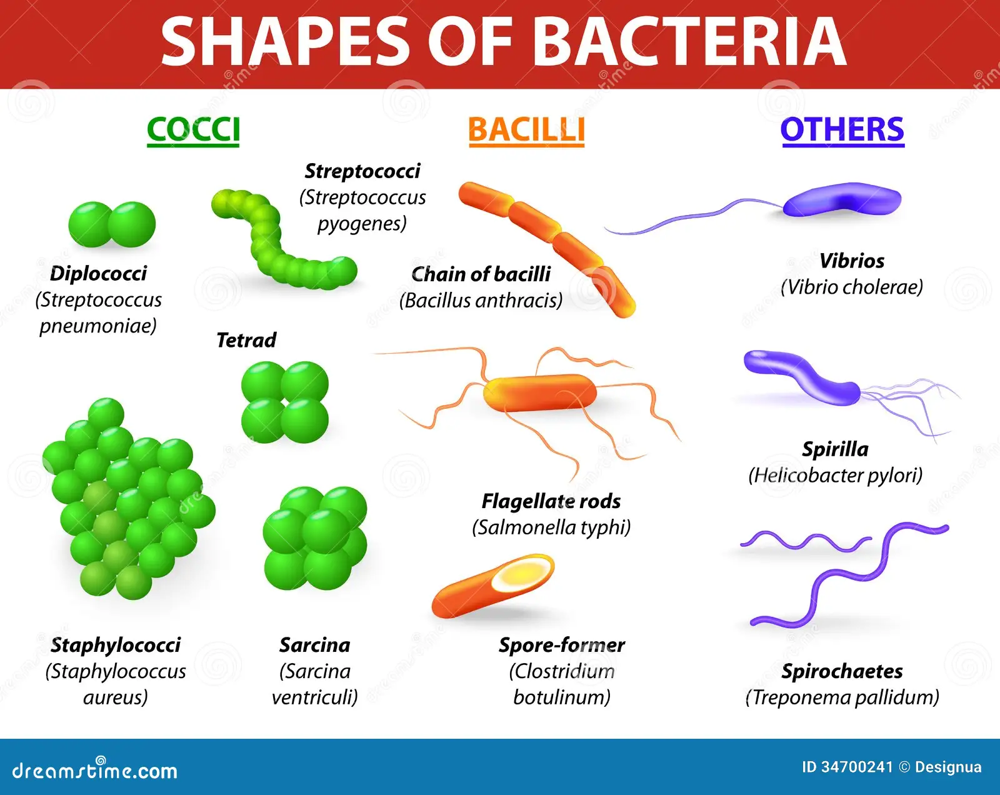

Week 02: Safety/ Begin Bug Project
Overview
Introduce soil and favorite bug projects, introduce databases and complete research journal finding lab.
Learning Objectives
- Isolate and culture microorganisms from soil samples using aseptic technique to obtain distinct colonies for screening.
- Search scientific databases effectively (e.g., Google Scholar, PubMed, library databases) using organism‑specific keywords to locate peer‑reviewed microbiology articles.
- Evaluate the credibility and relevance of scientific literature by examining study design, publication source, and applicability to the chosen microorganism.
- Summarize the main findings of a selected peer‑reviewed article, explaining how it enhances understanding of the biology, ecology, or clinical significance of the chosen “favorite bug.”
Protocol
Images
Add images to the images folder and display them below:






Don't Forget- Mention
- Pick a Bug
- Journal Finding